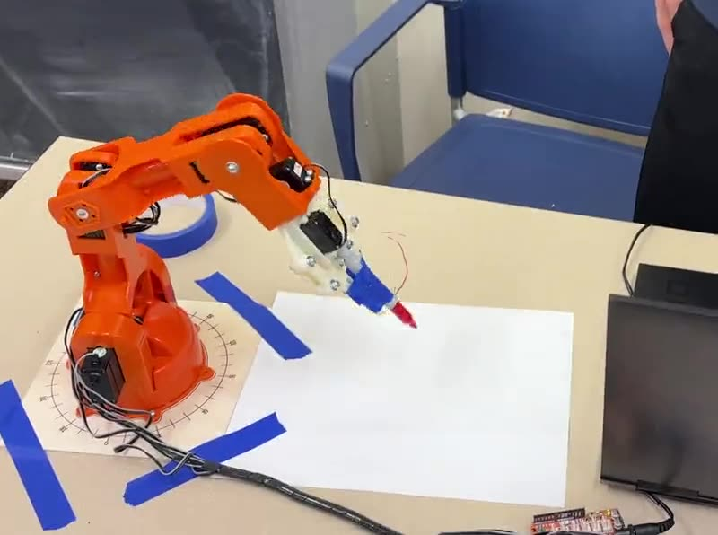
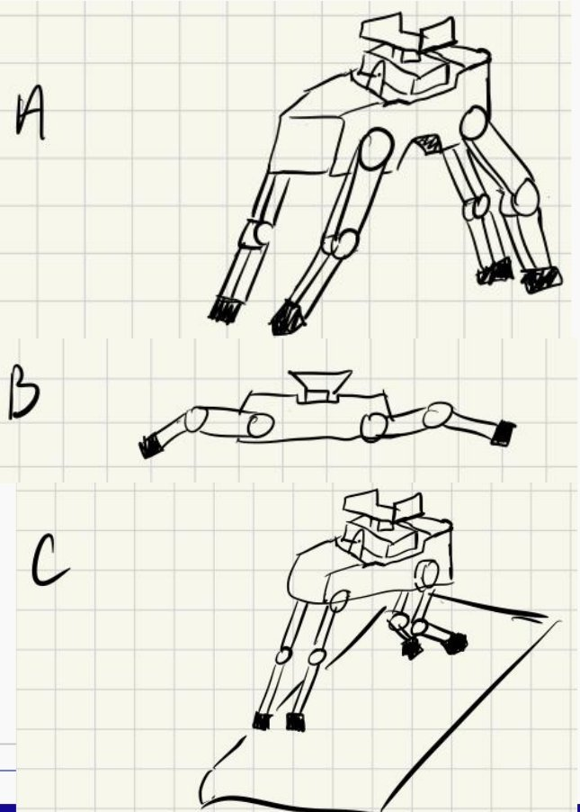

I design, build and test mechanical systems, from production fixtures to robots.
Interested in advanced manufacturing, real-time control and data-driven process improvement. Below is a selection of design work from internships, coursework and teams.
Featured work
Manufacturing Engineering Intern →
Standardized production drawings across four product lines, ran a phased evaluation of 3D scanning for as-built floorplans, and developed concepts for a universal, self-leveling bracket fixture.
Engine Design Studies →
Semester-long gas turbine design work, from reverse-engineering the Pratt & Whitney JT9D to sizing a small turbofan and an axial compressor stage from scratch. I wrote the Python models behind several of the designs.

A Robot Arm That Writes →
Modeled a 5-DOF arm with Product of Exponentials kinematics, then used inverse kinematics in MATLAB and Arduino to make it write “HI.”

Car Audio System →
Designed and wired a two-amp system with a DSP, built a horn cabinet, upgraded the charging system, and tuned the gains on an oscilloscope.

Heat Sink Design & CFD Validation →
Validated a SolidWorks Flow Simulation model against a lab experiment, then redesigned the fins for a cooler base.

Build-A-Beam →
Designed and load-tested a foam I-beam, then redesigned it after a compressive failure.

The Batapult →
A team-built, human-triggered catapult. I produced the complete engineering drawing package: assembly, BOM and part drawings.
In progress
FALL 2026
LevelHound →
A low-cost servo quadruped designed to keep its payload level on slopes up to 25°, using its legs and a two-axis gimbal. Proposal done; CAD and build underway.
RC Car
Designing and building a radio-controlled car this semester, including motor and gear selection, an Ackermann steering linkage, and machined and 3D-printed parts. Just getting started.
More work
Multi-Tool
CAD-modeled and 3D-printed multi-tool from Intro to Design. [Add one line on what it does.]
Valve
CAD-modeled and 3D-printed valve from Intro to Engineering. [Add one line on what it does.]
About
I'm a mechanical engineering student at the University of Notre Dame, graduating in May 2027, and I spent spring 2026 studying in London. I like work that combines physical prototyping, sensing, modeling and control. [Add a line or two in your own voice: what got you into engineering, or what kind of role you're looking for.]
Tools & skills
SolidWorks (CAD/CAM) · Fusion 360 · SolidWorks Flow Simulation · MATLAB · Python · C/C++ (microcontrollers) · Excel · 3D printing · Metalworking & machining · Fluent Spanish